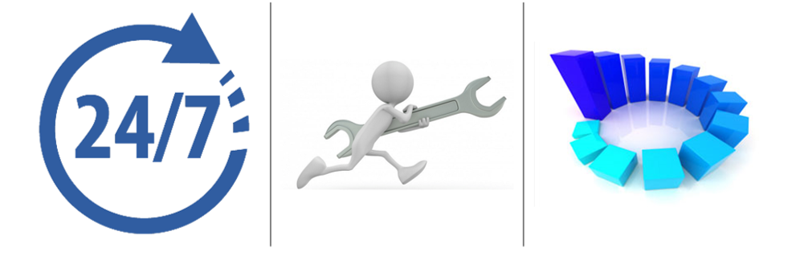
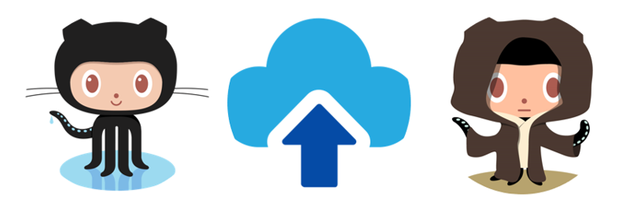

En la clase de nuevas tecnologias de desarrollo, se podra aprender sobre los servidores de aplicaciones, "Es una aplicación
que administra los recursos de un computador para ofrecer servicios.", esto trae ciertos beneficios los cuales son disponibilidad,mantenimiento,escalabilidad.
disponibilidad, ya que funciona a cualquier hora o en cualquier momento y en cualquier lugar.
Mantenimiento al actualizar, depurar y mantener los datos y operaciones del servidor, tambien permite reusabilidad y modularidad.
Escalabilidaden en general, permite hacer transacciones junto a concurrencias, tiene una gran capacidad de almacenamiento
con lo cual podemos agregar varias funcionalidades en el transcurso del desarrollo de dicha aplicación.

Es el repositorio de código más utilizado en el mundo, incluso los principales constructores de IDE lo han incluido por defecto en sus plataformas.
Este repositorio sirve para almacenar código de cualquier lenguaje de programación, de tal manera que facilita la accesibilidad de este en cualquier lugar del mundo,
y no solo eso, sino que también permite que otros usuarios puedan modificarlo desde otra ubicación sin costo alguno.
Sus operaciones principales constan de commit, pull, push, merge los cuales consisten.
Commit almacena el contenido actual del índice de los cambios con un mensaje de registro que describe los cambios.
incorpora los cambios de un repositorio remoto (computadora en la cual se hacen los cambios) a la sucursal actual(repositorio).
Push actualiza las refs remotas usando refs locales, mientras envía objetos necesarios para completar las refs dadas.
Merge se usa para combinar los cambios de una rama a otra.